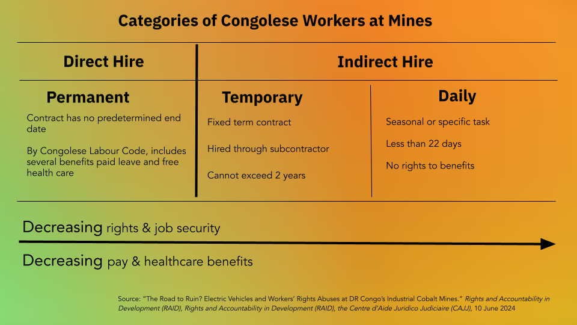

The True Cost of Electric Vehicles
By Sulekha Kishore, Anagha Satish, and Edward Speer
March 4, 2025

Electric vehicles (EVs) have seen massive increases in sales, news coverage, political importance, and regulatory attention as the worrying effects of climate change due to CO2 emissions become abundantly clear. Adoption of this “green” alternative to traditional internal combustion engine (ICE) vehicles is sold as the most climate-friendly option. However, there are hidden aspects of the production process of the lithium-ion batteries required for EVs and the carbon emissions of the energy generation methods that power EVs. In an effort to understand the full social and environmental impact of the electrification of transportation, we have conducted an investigative data analysis to determine the true cost of electric vehicles, compare that cost to the cost of ICE vehicles, and explore strategies for charging consumers the true cost of their transportation choices.
In this article, we will build up the true cost of EVs by exploring the different components that contribute to the social and environmental costs of EVs. We will first investigate the human labor and mining costs of cobalt, the primary mineral used in lithium-ion batteries. To determine the human costs, we will look at the direct and downstream costs of labor of mineral/metal mining for batteries required in electric vehicles as compared to those for ICE cars. We will then investigate the carbon emissions of the energy generation methods that power EVs and compare them to the carbon emissions of burning gasoline. Finally, we will explore strategies for charging consumers the true cost of their transportation choices, including direct intervention on vehicle sticker prices as well as cumulative carbon tax policies.
Drilling Down Deep

We will first investigate the human labor and mining costs of cobalt, the primary mineral used in lithium-ion batteries. To determine the human costs, we will look at the direct and downstream costs of labor of mineral/metal mining for batteries required in electric vehicles as compared to those for ICE cars.
The most important component of an EV is its battery. However, the materials required for these batteries come with a cost. 60% of the world’s Cobalt comes from the Democratic Republic of the Congo, where there are constant questions of worker abuse, human rights abuse, and child labor. We note that the majority of workers in the Congolese mines are indirect hires rather than direct hires, meaning that they are not afforded the same benefits and protections. We further analyze what it would cost to pay these workers a fair wage.
The difference in the number of indirect hires vs. direct hires in the Congolese mines is stark. Based on the following data, we can see that the majority of workers in the Congolese mines are indirect hires, meaning that indirect hiring is a route used to circumnavigate paying workers the benefits they deserve.

TODO: Cost of fair wages
Mining for batteries also pose a deep threat for the surrounding environment, which in turn affects its inhabitants. Mining raw materials requires harsh chemicals and large amounts of water, often in areas where water is already scarce. Additionally, heat between 800 and 1,000C is needed, which requires the burning of fossil fuels. These harms posed to the water supply and environment hurt the agricultural industry nearby. In an article in the National Library of Medicine, researchers talk to farmers in the Katangese Copperbelt in Central Africa, noting their struggle to obtain compensation for the costs of nearby mining. In this area, many farmers note the decrease in water quality. Specifically, between 2013 and 2014, they note the death of fish in the nearby river, and increased crop failure. The polluters have not responded to these concerns, however, 88% of the farmers interviewed voiced a need for the depollution of their area. They further state that they would accept, if offered, a compensation of $US 2820 per farmer.
Outside of the human costs of mining cobalt, there are also associated environmental costs. For example, the Tesla Model 3 holds an 80 kWh lithium-ion battery. Research[?] concludes that mining the materials for this battery would result in between 2,400kg and 16,000kg of CO2 emissions. This is between 1.5 and 1.6 metric tons. For context, one ton of CO2 is about the amount that a typical gas-powered car emits in about 2,500 miles of driving. Using the social cost of carbon, which we will explore below in the context of electricity generation, we can estimate the cost of these emissions to be around $295.
The Cost of Carbon Emissions
CO2 emissions are the primary environmental concern for the transportation industry. ICE vehicles have long been criticized for their high carbon emissions due to the direct burning of gasoline. However, the carbon emissions of the energy generation methods that power EVs are often ignored.
In order to dig deeper into the climate impact of EVs, we first assesed the current state of the energy generation methods used to power EVs in the United States. Drawing on the data available from the EPA's Emissions & Generation Resource Integrated Database (eGRID), we calculated the grams of carbon emissions per kWh of electricity generated in the United States as \[CO_2 = \frac{\bar{A}}{\bar{E}}\] where \(\bar{A}\) is the annual carbon emissions in grams and \(\bar{E}\) is the annual electricity generation in kWh for each power plant type. We then used this data to calculate the average carbon emitted per mile driven by an EV in the U.S based on the average energy efficiency of EVs sold in the U.S, and multiplied by the social cost of carbon to obtain an estimate of the cost of carbon emissions per mile driven by an EV, \(C_{EV}\). \[C_{EV} = SCC * \sum_{i}CO_{2_i} * \bar{\rho}\] where \(SCC\) is the social cost of carbon, \(CO_{2_i}\) is the carbon emissions per kWh of electricity generated by source \(i\), and \(\bar{\rho}\) is the average energy efficiency of EVs sold in the U.S. Note that as the number of electric vehicles on the road increases, the demand for electricity will increase, and the carbon emissions per mile driven by an EV will increase as well — meaning that just increasing the market share of electric vehicles will result in an increase in the cost of carbon emissions per mile for the EVs already on the roads. This value may be compared with an estimate of the cost of carbon emissions per mile driven by an ICE vehicle, obtained by multiplying the average fuel efficiency of ICE vehicles sold in the U.S by the social cost of carbon: \[C_{ICE} = SCC * \bar{\mu}\] where \(\bar{\mu}\) is the average fuel efficiency of ICE vehicles sold in the U.S.
The results of this analysis may be seen through the interactive plot below. The plot shows the cost of carbon, in cents per mile, broken up by both EV/ICE, as well as per energy source used to power EVs. Use the sliders at the bottom to adjust the energy generation mix and the percentage of EVs on the road to see how the cost of carbon changes. Use the checkboxes in the energy sources legend to toggle the inclusion or exclusion of different energy sources in the computation. The plot is initialized with the current energy generation mix and the current percentage of EVs on the road in the U.S.
The result of this comparison is clear. EVs are not only vastly more environmentally friendly than ICE vehicles, but they also have the potential to continue to improve in environmental impact as the energy generation mix in the U.S is shifted towards renewable energy source. Notice that well over 75% of the cost of carbon emissions for EVs comes from the burning of coal. Quick maths reveal that over the span of 100,000 miles, the current carbon costs of an EV are just of $12,000, while the carbon costs of an ICE over the same distance amount to over $750,000 — well over an order of magnitude difference. While an increase in the market share of EVs will increase the energy demands on the power grid resulting in a higher carbon cost per mile driven by EVs, the total cost of carbon emissions monotonically decreases as the mix of vehicles on the roads shifts towards electric.
Note that reflecting the true cost of carbon emissions into vehicle prices for consumers now will not only incentivize the purchase of less carbon-intensive vehicles, but also drive the market towards a more sustainable energy generation mix. Given that the social cost of carbon decreases significantly given renewable sources of energy (check out the per mile costs for primarily solar and wind power generation!), consumer costs could be significantly reduced by a shift towards renewable energy sources. This in turn could create economic and political pressure to drive the energy generation mix towards renewable sources, further reducing the cost of carbon emissions for all vehicles on the road. While we did not model this impact here, it is a clear feedback loop that could be further explored in future research.
Paying the Price
This investigation has shown that the true cost of consumer vehicles contains a number of different features, which may be divided roughly into two categories: costs incurred in the production of the vehicle, and costs incurred in the operation of the vehicle. Given this, we propose two strategies for charging consumers the true cost of their transportation choices.
Scenario 1: Sticker Price Only
The simplest way to charge consumers the true cost of their transportation choices is to directly intervene on vehicle sticker prices. The sticker price will need to reflect all relevant costs incurred during production and in ongoing costs, so that the vehicle should be priced with respect to expected emissions over the lifetime of the vehicle. Note that this estimate will be imperfect — fuel efficiency often declines as a vehicle ages — however, it is an adequate first approximation.
On this approach, then, the sticker price is \[P_{EV}=B_{EV} + \bar{L} * C_{EV}\] where \(B_{EV}\) is the base price of the vehicle including labor and emissions in production, \(\bar{L}\) is the expected lifetime of the vehicle in miles, and \(C_{EV}\) is the cost of carbon emissions per mile driven by an EV. The sticker price of an ICE vehicle would be calculated in a similar manner, with the base price and price of emissions replaced with the base price and cost of carbon emissions per mile driven by an ICE vehicle, respectively. Note that \(\bar{C}\) is a dynamic value that would change as the mixture of energy generation sources in the U.S changes.
TODO: PLOT OF PRICE TO COST WITH LABOR DATA
Notice that this approach has both benefits and disadvantages. The primary benefit of this approach is that consumers would face string incentives to purchase more responsible vehicles right up front, hopefully driving the market towards more sustainable vehicles rapidly when this policy is first implemented. However, the primary disadvantage is that this approach does not account for the ongoing costs of operating the vehicle — some consumers will be overcharged while others are undercharged, depending on their driving habits and the lifetime of the vehicle.
Scenario 2: Cumulative Dynamic Taxes
A more complex, but potentially more effective, way to charge consumers the true cost of their transportation choices is to intervene at two points in the vehicle lifecycle: at the point of purchase, and at the point of fueling. On this approach, consumers are charged the base price for their vehicle including the approapriate labor and emission prices in production, and then are charged a tax at the point of sale for fueling the vehicle. This tax would be dynamic for electric vehicles, changing as the energy generation mix in the U.S changes — but static for ICE vehicles, as the environmental impact of burning gasoline remains stable.
TODO: PLOT SHOWING PRICE TO COST WITH LABOR DATA
This strategy again has a number of benefits and disadvantages. The primary benefit of this approach is that it accounts for the ongoing costs of operating the vehicle, ensuring that consumers are charged the true cost of their transportation choices over the lifetime of the vehicle. Along with this benefit, the tax on fueling the vehicle is directly sensitive to the energy generation mix in the U.S, meaning that consumers will begin to push for political and corporate shifts towards sustainable energy sources to reduce their own costs. However, the primary disadvantage of this approach is that there is much less benefit for consumers at the point of sale of the vehicle to select for electric. This could slow the adoption of electric vehicles in the short term, as consumers are less incentivized to purchase electric vehicles right up front if they are unaware of the long-term benefit of doing so.
TODO: GRAPHIC SHOWING FINAL COMPARISON WITH LABOR DATA
Citations
- IEA (2024), Global EV Outlook 2024, IEA, Paris. URL Licence: CC BY 4.0
- U.S Environmental Protection Agency. (2023). Emissions & Generation Resource Integrated Database (eGRID). URL Licence: MIT
- K. Ricke, L. Drouet, K. Caldeira and M. Tavoni, Country-level Social Cost of Carbon, Nature Climate Change. DOI: 10.1038/s41558-018-0282-y